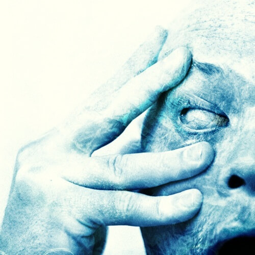
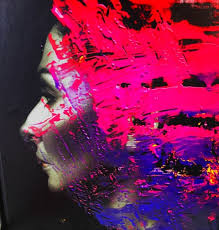
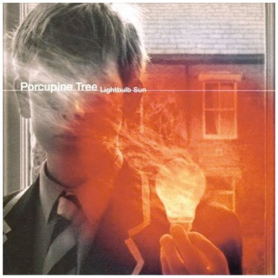
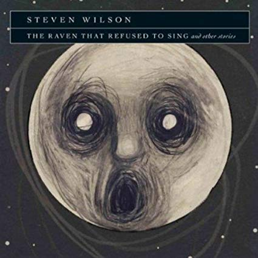

Recordings
Discover the music of Steven Wilson







SW quick facts
The Porcupine Tree track 'This Is No Rehearsal' is directly inspired by the real life case of James Bulger. James was taken from a shopping mall while his mother was momentarily distracted and was later found dead and tortured near a railway track


© Steven Wilson Productions LTD